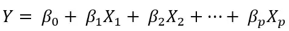

Understanding multiple linear regression
On my previous article about linear regression, I defined it as a linear approach for modelling the relationship between a scalar response and one or more explanatory variables, and focused and models with one explanatory variable. Today, we are going to talk about multiple linear regression, which is still linear regression but with two or more predictors.
Suppose you are the manager of a company, and you want to understand how the marketing of your products affects the number of sold products. Lets say you have Instagram divulgation, Facebook ads and Google ads. They can affect product selling in different ways, and if we apply simple linear regression here fixing Facebook ads, for example, the result would be inaccurate because we would not consider other influences.
That said, we extend our simple linear regression model to support more than on explanatory variable. Mathematically speaking, we have:

Where y is the output value, the X terms are input variables (explanatory), and each predictor (x) has a slope coefficient (B).
Taking it to our example, we can say that:
Products sold = B0 + B1 \* Instagram + B2 \* Facebook + B3 \* Google
The model would find the slope constants minimizing error function and fitting the best line. Again, we use Residual Sum of Squares (OLS):
Suppose that we have a real dataset on the example above, and that we ran our Linear Regression model:
Products sold = 1.92123 + 0.15021 \* Instagram + 0.05121 \* Facebook - 0.00123 \* Google
This means that if we fix the budget for Facebook and Google, increasing Instagram budget on advertisement by $1000 will increase our product sales by around 150 units (0.150 * 1000). We also see that Facebook is not affecting sold products.
But if we run Simple linear regression on Facebook, it would probably output a higher value (suppose 0.066), which would influence sales. Lets understand collinearity.
Collinearity is defined as a linear relationship between two explanatory variables. This means that, if we have perfect collinearity (C(y1, y2) = 1), the slope (B) of this variables is the same for all observations, which means they are perfectly linearly related.
Practically speaking, this means that a variable can influence another, they can be related linearly. For our example, suppose we measured the correlation between facebook and google, and the result was 0.40
This indicates a fair relationship between the two measures, and we can infer that when we facebook budget increase sold products, there is a tendency to google to increase it as well. This is why a simple linear regression will show impact on sales, because if we ran SLR, we would have only one value but the impact of both would be counted.
We also have to think is wether or not our predictors are useful in predicting the output. This is where forming Hypothesis come. The model we were discussing had numbers that were able to establish a close enough linear relationship, but this can be an accident and we did not prove the credibility of that relationship. So, we do a Hypothesis Test.
Lets start by forming a Null Hypothesis and an Alternative one. The Null hypothesis is that all coeficients (B) are equal to 0. The alternative is that at least one of the coefficients is not zero.
For this, we will use F-statistic (known as fixation indices). I will not cover it in this article, but if the value of it is equal to or very close to 1, results are in favor of Null Hypothesis. Note that F-statistic is not suitable when number of predictors is large or if you have more predictors than data samples.
So, we can try every combination of variables in our case (since we have only 3), and perform feature selection using different approaches, such as Forward or Backward selection.
Forward selection: start with a model without any predictor, but with the interceptor (B0). Perform linear regression for each predictor to find best performer (low residual sum of squares). Then, we add another variable and check vor the best 2 variable combination for lower RSS. We perform this step untill a stopping rule is statisfied (maybe 4 variable combination or other condition, is up to you).
Backward selection: start with all variables in the model and remove the least statistically significant . This is repeated untill a stopping rule is reached or when the model score cannot be improved.
Linear Regression Assumptions
When performing linear regression, we assume some thing about our data.
- The response variable is continuous and the explanatory variables are either continuous or binary
- The relationship between outcome and explanatory variables is linear
- Residuals are homoschedastic
- Residuals are normally distributed
- There is no more than limited multicollinearity
- There are no other external variables
- Independent errors
- Independent Observations
If those assumptions are proven to not be true, this does not mean that the model is unusable, but there will be limitations.
Extreme Values
Sometimes, when analysing regression, it is useful to remove outliers from data before refining model. It will have huge effects on coefficients (B), because the LSS method minimises squared error terms, and this can move the line if we have extreme values. When an outlier has this influence, it is described as having leverage on our regression line.
We can measure this using Cooks distance, which is a measure of the change in predicted values if an observation x is removed. Any value with a distance larger than three times the mean of Cooks distance might be an outlier.
Conclusion
Thanks for reading this! Hope it helps.
This article was written with the unique purpose of studying and passing on knowledge. I have used other articles to study and will reference them in References section.
References
What is the difference between linear and nonlinear equations